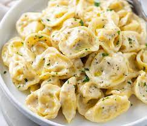

Tortellini

A traditional (creamy and healthy) pasta dish that is stuff with mushroom with a wonderful garlic sauce
Ingredients
Tortellini dough/Pasta
- 300 grams of all-purpose flour
- 3 eggs
Tortellini filling
- 1/2 lb cremini mushrooms
- 1/2 lb maitake or oyster mushrooms
- 3 tablespoons butter
- 4 cloves garlic
- 1 shallot
- 3 sage leaves (chopped finely)
- 1 cup grated parmigiano
Tortellini Sauce
- 1/2 cup butter
- 1 cup heavy cream
- 1/3 cup milk
- 5 cloves garlic, minced
- 1/4 tyeaspoon fresh ground nutmeg
- 1 cup grated parmigiano
Instructions
Tortellini Dough
- Add flour to bowl and make a well in the middle
- Add 2 eggs, 3 eggs yolks
- Incoporate the flour form the edges into the ggs slowly -> until shaggy dough look
- Place dough on flat surface and knead by hand until smooth (5 ish mins)
- Wrap dough in plastic wrap (45 mins)
- Cut dough into 4 even pieces... take one piece of dough and roll into half inch thckness
- Run the dough through pasta roller (widest setting and move until #5 thinness setting)
- Repeat with the other pieces of dough
- Cut dough in 1-2 inches squares...(they are ready to fill now)
- Add pea-sized dot of filling to the center of the square
- brush edges with water and close points together to make a taco
- Connect the other points. repeats with the rest of the dough
Filling
- Finely chop the mushrooms, until 1/4 inch thickness
- In a saucepan, add butter, heat up and add garlic, and shallot (all finely chopped)
- Cook until translucent, mix well
- Add chopped mushroom and cook over medium heat (until no water)
- Place the mix into a food processor and make into paste
- Adde grated parmigiano and add to salt + pepper to taste, mix well
- Put the paste in piping bag
Sauce
- Add butter and heavy cream, and heat over medium-high until butter is melted
- Stir occasionally to emulsify, to a light simmer and reduce for 3 minutes
- Stir in parmigiano and stir until emolsified and melted
- Turn off heat and add minced garlic and season with salt + pepper
Assembly
- Cook the tortellinis for 2 mins and remove with strainer
- Add them to sauce
- Add couple of pasta water and toss the tortellinis until fully coated
- Serve with grated Parmigiano on top